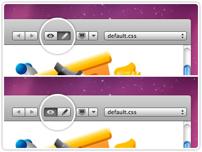

¿Por qué elegir a MIK Consulting como su aliado?
Somos una empresa especializada en brindar servicios integrales de Tecnologías de la Información enfocados en el desarrollo de software y escalamiento ágil. Nuestra razón de ser son nuestros clientes, porque de todos y de cada uno de ellos hemos aprendido. Nos gusta lo que hacemos, y nos gusta haberlo hecho junto a ellos.
Desarrollo ágil de software
Más de 4 años de experiencia en desarrollos de software en la nube (Cloud). Más de 150 clientes atendidos con implementaciones y servicios en la nube. Aplicaciones Web y Mobile (APPs para Android e iOS). Asignación de perfiles en diveras especialidades a equipos ágiles.
Venta de licencias
Tenemos alianzas con Oracle y Microsoft, dos de los fabricantes de tecnología más importantes a nivel mundial, con el siguiente portafolio:
ORACLE: Oracle Database Server, Oracle Business Intelligence, Oracle Web Logic Server, Oracle Developer Suite, etc. Infraestructura en la nube basado en Oracle Cloud: Máquinas virtuales, Back-ups, base de datos como servicio, etc.
MICROSOFT: Office 365. Sistemas Operativos: Windows 10, Windows Server. Base de Datos: SQL Servers. Infraestructura en la nube basadas en Azure: Servidores, Back-ups, máquinas virtuales, base de datos como servicio, etc.
Business Process Outsourcing:
Ofrecemos especialistas calificados en TI capaces de integrar herramientas y skills para incrementar la productividad de su empresa, así como personal administrativo capacitado:
- Jefe de Proyecto
- Analistas de Procesos
- Analistas funcionales
- Arquitectos de soluciones
- Analistas programadores de soluciones móviles
- Analistas Programadores: Java, .NET, Python, PHP, Oracle Forms y Reports, COBOL / RPG 400, etc.
Gestión de la información
Contamos con especialistas en implementaciones de explotación de datos, así como en implementación, optimización de repositorios de datos:
Inteligencia de Negocios (BI): Implementación de soluciones de BI, como DataMart, Datawherehouse. Especialistas en herramientas como Microsoft SQL Server (Integration, Analysis, Reporting Services), Power BI, Oracle Data Visualization, entre otras.
Base de datos: Administración de Base de Datos y perfiles en Administrador de Base de Datos (DBA), Operador de Base de Datos (DBO), Oracle, SQL Server, PostgreSQL
Software Factory
Desarrollo de soluciones informáticas a medida (Software Factory) para su empresa. Más de 15 años de experiencia desarrollando soluciones de TI para empresas líderes en sus sectores, así como para diferentes rubros de negocio. Brindamos servicio de análisis, diseño, programación y mantenimiento de aplicaciones Web, Mobile (APP), Escritorio.
Contamos con especialistas en tecnologías: Java, Microsoft .NET, Python, Oracle Developer (Forms y Report), Power Builder, frameworks de JavaScript